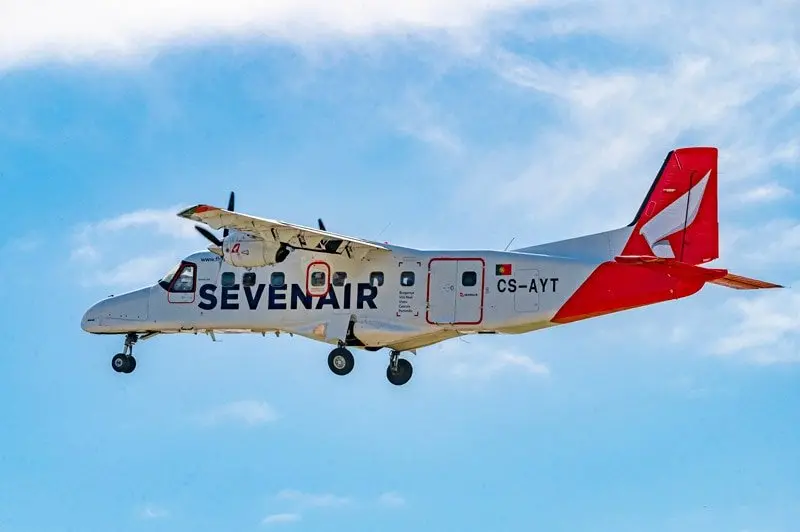
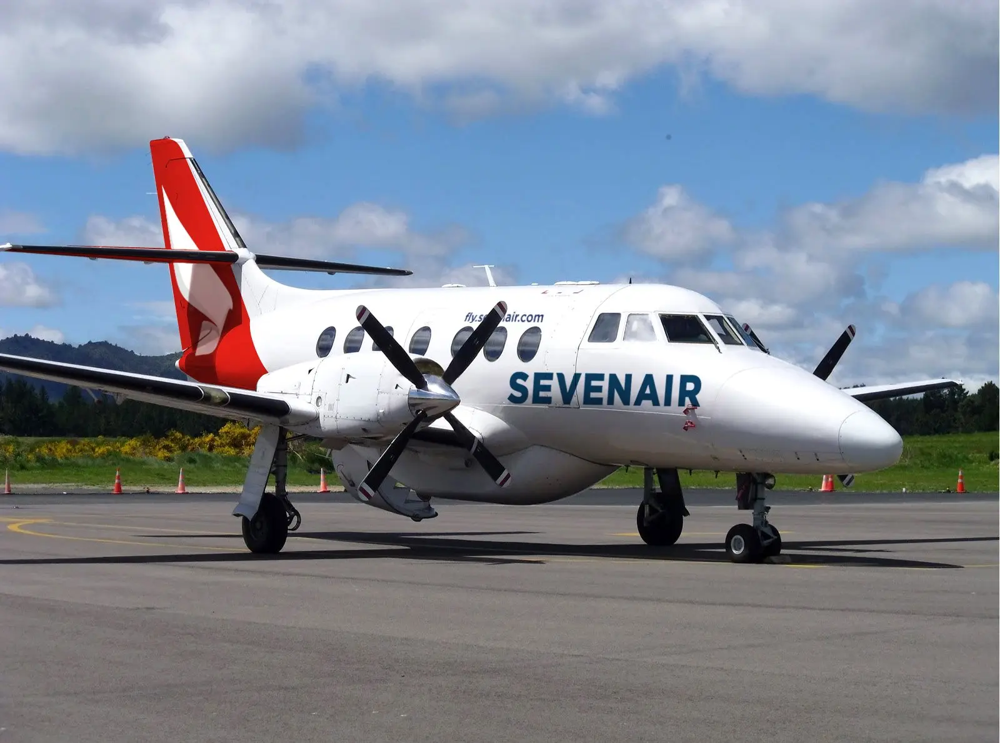
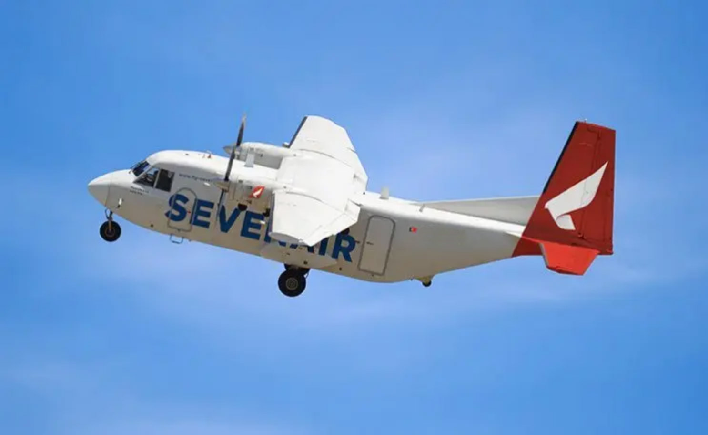
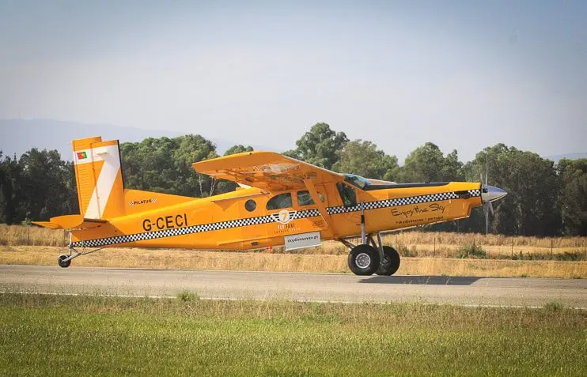
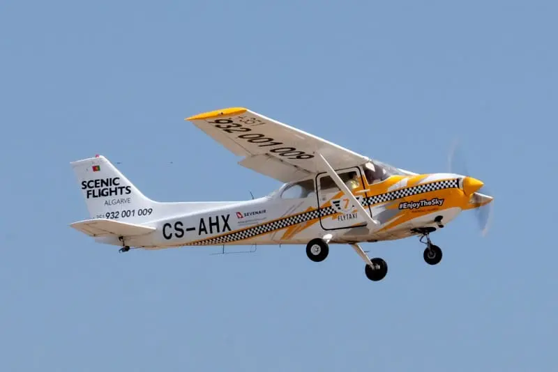
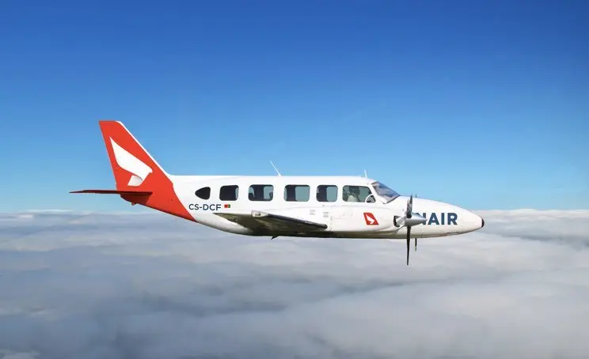
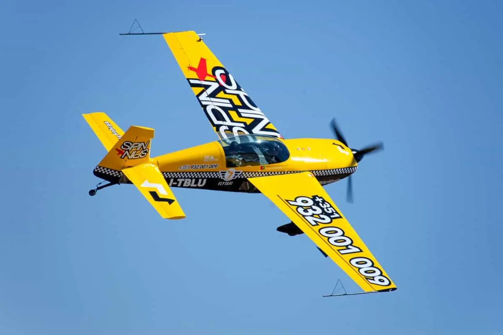

|
|
|
|
|
A Sevenair Air Services, antes chamada Aero VIP, é uma companhia aérea regional portuguesa com sede no Aeródromo de Cascais, no oeste de Lisboa. Opera rotas domésticas, ou seja, no interior de Portugal, porém, também oferece serviços adicionais de aviação e operações não programadas em países terceiros. Faz parte do Grupo Sevenair, um dos maiores grupos aeronáuticos a operar aqui em Portugal. O mesmo oferece diversos serviços á população e ao mundo, dos quais: transporte aérea (regional e não regular), obras aéreas, escola de aviação e manutenção a aeronaves. |

|
O Sevenair Group é o maior grupo de aviação geral em Portugal e um dos maiores da Europa. Com suas origens em 1988, oferece uma ampla capacidade, cobrindo a maioria dos ângulos da indústria.
Para além do transporte de passageiros e carga em Portugal e da oferta de charters ad hoc com cobertura internacional na divisão de companhias aéreas, a divisão academy é uma referência mundial para aspirantes a piloto, tripulação de cabina, despachantes de voo e técnicos de manutenção. A divisão de manutenção é líder em serviços gerais de manutenção e engenharia de aviação e o grupo também oferece aviônica e revenda de aeronaves e serviços pós-venda.
Saiba mais sobre:
Esta empresa, como já foi dito, trabalha apenas em território nacional.
Dornier 228Este modelo conta com um total de 19 lugares podendo chegar aos 231 kts. Tendo 3 aeronaves no total. |
 |
|  |
BAe Jetstream 32Este modelo tem cerca de 19 lugares, podendo atingir uma velocidade de 263Kts. A Sevenair conta com 2 aeronaves dete modelo. |
Casa Aviocar C212Este modelo conta com 20 lugares, podendo atingir uma velocidade máxima de 208Kts. Este é o segundo modelos em mais abundância desta companhia, contando com 5 aeronaves. |
 |
|  |
Pilatus PC6Com 10 lugares para passageiros, o Pilatus PC6 pode atingir os 151 Kts. Esta companhia conta com 6 aeronaves dete modelo, sendo a dominante na Sevenair |
Cessna 172Com apenas 4 lugares, este modelo chega aos 163 Kts. Este modelo destina-se apenas a voos turísticos e de charter. A companhia conta com 4 aircraft dete modelo. |
 |
|  |
Piper PA31 ChieftainCom 9 lugares, este modelo pode atingir os 227 Kts. Este modelo destina-se tambem a voos turísticos e de charter. A companhia conta com apenas 1 aircraft dete modelo. |
Extra 300Com apenas 2 lugares, este modelo atinge a velocidade máxima de 185 Kts. Este modelo destina-se tambem a voos de experiências aéreas e de demonstração. Tendo apenas 1 aircraft na sua frota. |
 |